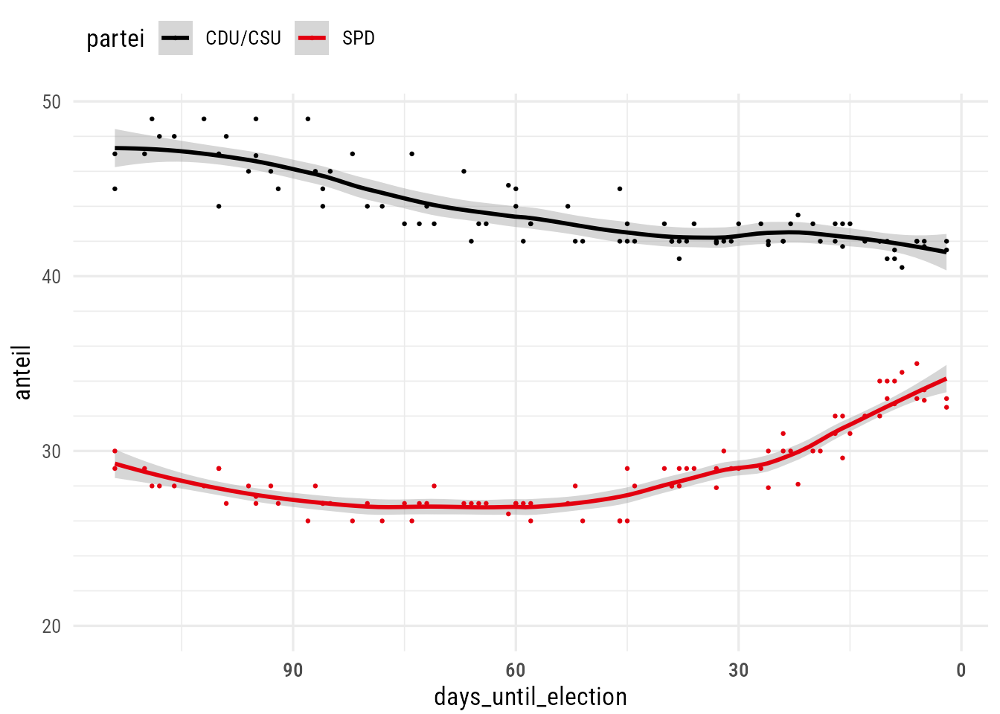

Code
library(tidyverse)
library(ggtext)
library(here)
library(rvest)
library(dawumr)
knitr::opts_chunk$set(dev = "ragg_png")
source(here("R", "custom-theme.R"))
theme_set(theme_custom())library(tidyverse)
library(ggtext)
library(here)
library(rvest)
library(dawumr)
knitr::opts_chunk$set(dev = "ragg_png")
source(here("R", "custom-theme.R"))
theme_set(theme_custom())Auf https://www.wahlrecht.de/umfragen/politbarometer.htm sind die Umfrageergebnisse der Forschungsgruppe Wahlen seit 1998 verfügbar - sowohl Projektion als auch die politische Stimmung.
# Links zu den Jahres-Unterseiten sammeln
base_url <- "https://www.wahlrecht.de/umfragen"
start_page_projektion_url <- "https://www.wahlrecht.de/umfragen/politbarometer.htm"
start_page_projektion <- read_html(start_page_projektion_url)
links_projektion <- start_page_projektion |>
html_nodes(css = "a") |>
html_attr("href")
links_projektion <- links_projektion[str_detect(links_projektion, "politbarometer-")]
start_page_stimmung_url <- "https://www.wahlrecht.de/umfragen/politbarometer/stimmung.htm"
start_page_stimmung <- read_html(start_page_stimmung_url)
links_stimmung <- start_page_stimmung |>
html_nodes(css = "a") |>
html_attr("href")
links_stimmung <- paste("politbarometer",
links_stimmung[str_detect(links_stimmung, "stimmung-")],
sep = "/")links_kombi <- c(start_page_projektion_url, start_page_stimmung_url,
paste(base_url, c(links_projektion, links_stimmung), sep = "/"))
tables <- map(links_kombi, function(x) {
read_html(x) |>
html_nodes("table.wilko") |>
html_table()
})
tables <- set_names(tables, str_remove(links_kombi, base_url))Zunächst nur die aktuellsten Umfragen (ab 2017)
tables_aktuell <- c(pluck(tables, "/politbarometer/stimmung.htm"),
pluck(tables, "/politbarometer.htm"))
names(tables_aktuell) <- c("stimmung", "projektion")
df_stimmung <- tables_aktuell[["stimmung"]][, -c(2, 12)] |>
tail(nrow(tables_aktuell[["stimmung"]]) - 3) |>
rename(datum = 1) |>
pivot_longer(cols = -c(datum), names_to = "partei", values_to = "anteil") |>
filter(!str_detect(datum, "^Wahl")) |>
mutate(
anteil = str_remove_all(anteil, "[-%]"),
anteil = as.numeric(anteil),
datum = dmy(datum)
) |>
# Unentschlossene und Nichtwähler + Summe entfernen
filter(!partei %in% c("Unent-schlossene", "Nicht-wähler", "Summe"))
projektion_colnames <- as.character(tables_aktuell[["projektion"]][1, ])
projektion_colnames[c(1, 2, 12)] <- c("datum", "X1", "X2")
colnames(tables_aktuell[["projektion"]]) <- projektion_colnames
df_projektion <- tables_aktuell[["projektion"]] |>
select(-c(X1, X2)) |>
tail(nrow(tables_aktuell[["stimmung"]]) - 3) |>
filter(Zeitraum != "Bundestagswahl") |>
pivot_longer(cols = -c(datum, Befragte, Zeitraum),
names_to = "partei", values_to = "anteil") |>
mutate(
anteil = str_remove_all(anteil, "[-%]"),
anteil = as.numeric(anteil),
datum = dmy(datum)
)
df_poba_kombi <- df_projektion |>
left_join(df_stimmung, by = join_by(datum, partei),
suffix = c(".projektion", ".stimmung"))df_btw <- tribble(
~wahl, ~partei, ~anteil,
2021, "SPD", 25.7,
2021, "CDU/CSU", 24.2,
2021, "Grüne", 14.7,
2021, "FDP", 11.4,
2021, "AfD", 10.4,
2021, "Linke", 4.9
)df_poba_kombi |>
filter(!partei %in% c("BSW", "FW", "Sonstige")) |>
mutate(
partei = case_match(
partei,
"GRÜNE" ~ "Grüne",
"LINKE" ~ "Linke",
.default = partei
),
partei = factor(partei, levels = c("CDU/CSU", "SPD", "AfD", "Grüne", "FDP", "Linke"))
) |>
ggplot(aes(datum)) +
geom_line(
aes(y = anteil.stimmung),
col = color_pal[1], linewidth = 0.2) +
geom_line(
aes(y = anteil.projektion),
col = color_pal[2], linewidth = 0.8
) +
# Bundestagswahlergebnisse
geom_point(
data = df_btw,
aes(as_date("2021-09-26"), anteil),
inherit.aes = FALSE, size = 3, shape = 21, color = "white", fill = color_pal[3]
) +
scale_color_manual(values = party_pal) +
facet_wrap(vars(partei)) +
guides(color = "none") +
labs(
title = "Politische Stimmung vs. Projektion",
caption = "Daten: Politbarometer",
x = NULL, y = "Anteil (%)"
) +
theme(
strip.text = element_text(family = "Roboto Condensed SemiBold", size = 11)
)
df_dawum <- pull_dawum_dataframe()table(df_dawum$Institute_Name)
Allensbach Civey
746 1561
Conoscope dimap
7 7
Forsa Forschungsgruppe Wahlen
3814 1726
GESS Phone & Field GMS
8 908
IFM Berlin IM Field
8 45
Infratest dimap INSA
3192 6581
Institut Wahlkreisprognose Ipsos
1957 460
Mentefactum Policy Matters
14 36
pollytix Trend Research Hamburg
29 102
uniQma Universität Hamburg
7 14
Verian (Emnid) YouGov
2581 857 selected_institutes <- c("Allensbach", "Forsa", "Forschungsgruppe Wahlen", "Infratest dimap",
"Verian (Emnid)", "YouGov", "Ipsos", "INSA")
date_election_2021 <- as_date("2021-09-27")
date_election_2025 <- as_date("2025-02-23")
campaign_duration <- duration("3 months")
p <- df_dawum |>
filter(Parliament_Shortcut == "Bundestag" & Institute_Name %in% selected_institutes) |>
filter(Party_Shortcut %in% c("CDU/CSU", "SPD", "Grüne", "FDP", "AfD", "Linke")) |>
mutate(
date_field = Survey_Period_Start +
difftime(Survey_Period_End, Survey_Period_End, unit = "days") / 2) |>
filter(
date_field >= date_election_2021 - campaign_duration & date_field < date_election_2021 |
date_field >= date_election_2025 - campaign_duration & date_field < date_election_2025
) |>
# Zeitpunkt der Umfrage als Mittelpunkt der Feldzeit
mutate(
election_year = year(date_field),
election_year = ifelse(election_year %in% 2024:2025, 2025, election_year),
election_year = factor(election_year),
week = isoweek(date_field),
days_until_election = case_when(
election_year == 2021 ~ date_election_2021 - date_field,
election_year == 2025 ~ date_election_2025 - date_field
),
days_until_election = as.integer(days_until_election)
) |>
# Pro Institute nur eine Umfrage pro Woche TODO
group_by(Institute_Name, election_year, week, Party_Shortcut) |>
summarize(
share = mean(Share),
days_until_election = round(mean(days_until_election)),
.groups = "drop") |>
mutate(Party_Shortcut = fct_reorder(Party_Shortcut, -share)) |>
ggplot(aes(days_until_election, share, color = election_year)) +
geom_point(size = 0.2) +
geom_smooth(
aes(),
method = "loess", span = 0.5
) +
scale_x_reverse() +
scale_color_manual(values = color_pal[c(2, 4)]) +
coord_cartesian(ylim = c(NA, NA)) +
labs(
title = "Bislang deutlich weniger Bewegung in den Umfragen als 2021",
subtitle = sprintf("Geglättete Stimmenanteile (%%) in Umfragen im Vorfeld der Bundestagswahlen
<b style='color:%s'>2021</b> und <b style='color:%s'>2025</b>",
color_pal[2], color_pal[4]),
caption = paste("Daten: DAWUM, Ergebnisse der Institute",
paste(selected_institutes, collapse = ", "),
"Visualisierung: Ansgar Wolsing & Thorsten Faas"),
x = "Anzahl Tage bis zur Wahl", y = NULL
) +
theme(
legend.position = "none", legend.justification = "left"
)p + facet_wrap(vars(Party_Shortcut)) +
coord_cartesian(ylim = c(0, NA)) 
p + facet_wrap(vars(Party_Shortcut), scales = "free_y") +
# scale_y_continuous(breaks = seq(0, 100, 5)) +
coord_cartesian(ylim = c(0, NA)) +
labs(
subtitle = sprintf("Geglättete Stimmenanteile (%%) in Umfragen im Vorfeld der Bundestagswahlen
<b style='color:%s'>2021</b> und <b style='color:%s'>2025</b>,
y-Achse je Partei skaliert",
color_pal[2], color_pal[4]),
)
head(df_dawum) ID Date Parliament_Shortcut Parliament_Name
1 1821 2020-12-13 Bundestag Bundestag
2 1221 2019-03-28 Bundestag Bundestag
3 484 2017-04-29 Schleswig-Holstein Landtag von Schleswig-Holstein
4 1982 2021-05-18 Brandenburg Brandenburgischer Landtag
5 1477 2019-11-19 Bundestag Bundestag
6 3531 2024-08-06 Brandenburg Brandenburgischer Landtag
Election Institute_Name Party_Shortcut
1 Bundestagswahl Verian (Emnid) Sonstige
2 Bundestagswahl Forschungsgruppe Wahlen Sonstige
3 Landtagswahl in Schleswig-Holstein INSA Sonstige
4 Landtagswahl in Brandenburg Infratest dimap Sonstige
5 Bundestagswahl Allensbach Sonstige
6 Landtagswahl in Brandenburg INSA Sonstige
Party_Name Share Tasker_Name
1 sonstige Parteien 6 BILD am Sonntag
2 sonstige Parteien 5 ZDF-Politbarometer
3 sonstige Parteien 2 BILD
4 sonstige Parteien 5 RBB Brandenburg aktuell / Antenne Brandenburg
5 sonstige Parteien 5 Frankfurter Allgemeine Zeitung
6 sonstige Parteien 4 Nordkurier
Surveyed_Persons Survey_Period_Start Survey_Period_End
1 2374 2020-12-03 2020-12-09
2 1325 2019-03-25 2019-03-27
3 1004 2017-04-26 2017-04-28
4 1183 2021-05-12 2021-05-15
5 1298 2019-11-02 2019-11-13
6 1000 2024-07-29 2024-08-05